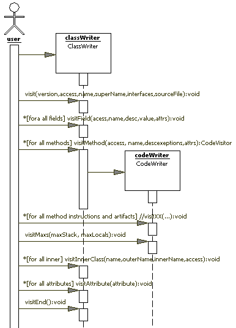
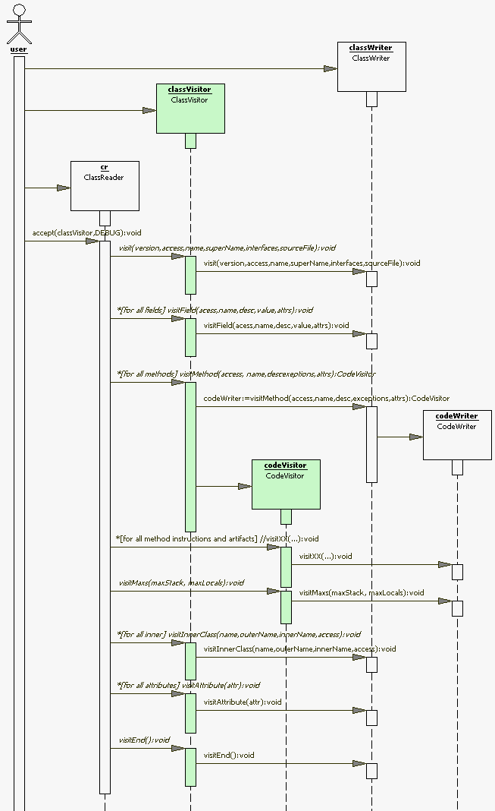

Using the ASM Toolkit for Bytecode Manipulation
Using the ASM Toolkit for Bytecode Manipulation
Using the ASM Toolkit for Bytecode Manipulation
Using the ASM Toolkit for Bytecode ManipulationSometimes Java developers need to generate or change Java bytecode in the runtime. Is can be necessary for AOP or debugging, or even for performance optimization. There are several frameworks available that provide different level of abstraction for runtime code generation. One of the oldest bytecode manipulation frameworks, Byte Code Engineering Library (BCEL), is used in a number of projects; however, it is rather difficult to learn and use. It is also adds significant overhead to memory and processor usage for runtime code transformations.
The ASM bytecode manipulation framework has been designed and implemented to be small and as fast as possible. ASM's runtime .jar is only 25KB, compared to 350KB for BCEL. The load time overhead caused by class transformation with ASM is about 60 percent with ASM, compared to 700 percent or more with BCEL. These factors have been recognized by the Java community and several well known projects have switched to ASM, such as CGLIB and AspectWerkz. The list of projects that are using form the beginning ASM also includes Speedo, Groovy, dynaop, BeanShell, and a number of others.
To achieve such performance, ASM's design is based on an event-driven model.
If you are familiar with the SAX API for XML
processing, it will be easy to get into ASM, which uses a
Visitor pattern
to avoid representing visited structures with objects. Visitors receive events for particular pieces of the structure from the event generator. In SAX, XMLReader is the most commonly used event generator.
ASM framework provides a similar ClassReader class, which
knows how to parse Java bytecode from existing classes and how to fire
appropriate events to the underlying visitors. This flow of events can be also generated manually,
as we'll see in the next section.
All possible events are defined by the ClassVisitor and CodeVisitor interfaces.
The order of events is very important. Custom visitors can hook up into the flow of events and change it in order to implement bytecode transformations. ClassAdapter and CodeAdapter provide an empty implementation of the ClassVisitor and CodeVisitor interfaces and delegate all events to the linked visitor. Custom visitors can be inherited from these classes and override necessary methods and change event flow before delegating it to the next visitor. Usually, events end up in the ClassWriter and CodeWriter classes, which know how to convert a chain of events back into bytecode. Those two classes are sufficient to generate bytecode
from scratch.
Let's look at a simple example. Imagine that you need to generate bytecode for the Notifier interface,
which would be compiled from following Java code.
public interface Notifier {
void notify( String msg);
void addListener( Listener observer);
}We can write code that will send an appropriate event to ClassWriter and CodeWriter.
Figure 1 shows a Sequence UML diagram for this.

Figure 1. Sequence diagram for typical bytecode generation
ASM code to generate the above interface will look like the following (please note that examples in this article are based on ASM version 1.5.1).
import org.objectweb.asm.ClassWriter;
import org.objectweb.asm.CodeVisitor;
import org.objectweb.asm.Constants;
public class NotifierGenerator
implements Constants {
...
ClassWriter cw = new ClassWriter(false);
cw.visit( ACC_PUBLIC+ACC_ABSTRACT+ACC_INTERFACE,
"asm1/Notifier", // class name
"java/lang/Object", // super class
null, // interfaces
"Notifier.java"); // source file
CodeVisitor cv;
cv = cw.visitMethod( ACC_PUBLIC+ACC_ABSTRACT,
"notify", // method name
"(Ljava/lang/String;)V", // method descriptor
null, // exceptions
null); // method attributes
cv = cw.visitMethod( ACC_PUBLIC+ACC_ABSTRACT,
"addListener", // method name
"(Lasm1/Listener;)V", // method descriptor
null, // exceptions
null); // method attributes
cw.visitEnd();
byte[] bytecode = cw.toByteArray();
In this example, ClassWriter is receiving manually crafted events and
creating corresponding bytecode. Notice the internal representation
of the class name in the visit() method and the method descriptor in
visitMethod(). Construction of such values is a common task
in bytecode generation. Fortunately, the Type class provides
several helper methods for this:
getDescriptor(Class) converts a class name into bytecode representation.
getMethodDescriptor(Type, Type[]) constructs a method descriptor. For example, a descriptor for the addListener() method could be created using the code below.
String desc = Type.getMethodDescriptor(
Type.getType(Void.TYPE),
new Type[] {Type.getType(Listener.class)})
);Ideally, it is good to have an understanding of the bytecode structure and JVM opcodes (see the Resources section below), but it is possible to start digging in even without such knowledge. ASM includes an utility class that can take a .class file and create Java source code that, when compiled, will produce an equivalent ASM-generated class. So you can compile Notifier.java and then use the command
asmifier.cmd Notifier.classto generate equivalent code to that shown above.
Here is what asmifier.cmd looks like:
set cp=%cp%;%ASM_HOME%\asm.jar
set cp=%cp%;%ASM_HOME%\asm-attrs.jar
set cp=%cp%;%ASM_HOME%\asm-util.jar
set c=org.objectweb.asm.util.ASMifierClassVisitor
java -cp %cp% %c% %1Before looking at bytecode transformation, we need a better understanding
of the events defined for the ClassVisitor interface.
These events should come in the following order and contain parameters as described below.
| Once | visit |
Class access flags (public, private, static, etc.), bytecode version, name, super class, implemented interfaces, and source file name. |
| Multiple times |
visitField |
Field access flags, name and signature, init value, and field attributes (e.g., annotations). |
visitMethod |
Method access flags, name and signature and method attributes. | |
visitInnerClass |
Inner class access flags, its name and outer name | |
visitAttribute |
Class-level attributes | |
| Once | visitEnd |
Complete processing |
visitMethod is different from the others, because it returns a new instance of
CodeVisitor for every call. That instance will
handle processing events for method bytecode (including method and parameter
attributes, information for try-catch blocks, etc.).
The table below outlines the methods of CodeVisitor.
These methods must be called in the sequential order of the
bytecode instructions of the visited code. Each method can either handle bytecode instructions
grouped by the similar parameters or other bytecode artifacts, such as the local variable table,
line numbers, try-catch blocks, and nonstandard attributes (marked grey in the table below).
visitInsn |
Visits a zero operand instruction: NOP, ACONST_NULL, ICONST_M1, ICONST_0, ICONST_1, ICONST_2, ICONST_3, ICONST_4, ICONST_5, LCONST_0, LCONST_1, FCONST_0, FCONST_1, FCONST_2, DCONST_0, DCONST_1, IALOAD, LALOAD, FALOAD, DALOAD, AALOAD, BALOAD, CALOAD, SALOAD, IASTORE, LASTORE, FASTORE, DASTORE, AASTORE, BASTORE, CASTORE, SASTORE, POP, POP2, DUP, DUP_X1, DUP_X2, DUP2, DUP2_X1, DUP2_X2, SWAP, IADD, LADD, FADD, DADD, ISUB, LSUB, FSUB, DSUB, IMUL, LMUL, FMUL, DMUL, IDIV, LDIV, FDIV, DDIV, IREM, LREM, FREM, DREM, INEG, LNEG, FNEG, DNEG, ISHL, LSHL, ISHR, LSHR, IUSHR, LUSHR, IAND, LAND, IOR, LOR, IXOR, LXOR, I2L, I2F, I2D, L2I, L2F, L2D, F2I, F2L, F2D, D2I, D2L, D2F, I2B, I2C, I2S, LCMP, FCMPL, FCMPG, DCMPL, DCMPG, IRETURN, LRETURN, FRETURN, DRETURN, ARETURN, RETURN, ARRAYLENGTH, ATHROW, MONITORENTER, or MONITOREXIT. |
visitFieldInsn |
Visits a field instructions: GETSTATIC, PUTSTATIC, GETFIELD, or PUTFIELD. |
visitIntInsn |
Visits an instruction with a single int operand: BIPUSH, SIPUSH, or NEWARRAY. |
visitJumpInsn |
Visits a jump instruction: IFEQ, IFNE, IFLT, IFGE, IFGT, IFLE, IF_ICMPEQ, IF_ICMPNE, IF_ICMPLT, IF_ICMPGE, IF_ICMPGT, IF_ICMPLE, IF_ACMPEQ, IF_ACMPNE, GOTO, JSR, IFNULL, or IFNONNULL. |
visitTypeInsn |
Visits a type instruction: NEW, ANEWARRAY, CHECKCAST, or INSTANCEOF. |
visitVarInsn |
Visits a local variable instruction: ILOAD, LLOAD, FLOAD, DLOAD, ALOAD, ISTORE, LSTORE, FSTORE, DSTORE, ASTORE, or RET. |
visitMethodInsn |
Visits a method instruction: INVOKEVIRTUAL, INVOKESPECIAL, INVOKESTATIC, or INVOKEINTERFACE. |
visitIincInsn |
Visits an IINC instruction. |
visitLdcInsn |
Visits a LDC instruction. |
visitMultiANewArrayInsn |
Visits a MULTIANEWARRAY instruction. |
visitLookupSwitchInsn |
Visits a LOOKUPSWITCH instruction. |
visitTableSwitchInsn |
Visits a TABLESWITCH instruction. |
visitLabel |
Visits a label. |
visitLocalVariable |
Visits a local variable declaration. |
visitLineNumber |
Visits a line-number declaration. |
visitTryCatchBlock |
Visits a try-catch block. |
visitMaxs |
Visits the maximum stack size and the maximum number of local variables of the method. |
visitAttribute |
Visits a non-standard attribute of the code. |
The visitMaxs method is called
after all of the instructions have been visited. The visitTryCatchBlock,
visitLocalVariable, and visitLineNumber methods may be
called in any order, at any time (provided the labels passed as arguments have
already been visited with visitLabel).
In order to specify positions in the method bytecode and not have to use absolute
offsets, ASM uses the Label class. Label instances
are passed as parameters of visitJumpInsn,
visitLookupSwitchInsn, visitTableSwitchInsn,
visitTryCatchBlock, visitLocalVariable, and visitLineNumber,
to refer to a specific place in method code; a visitLabel method with the
same Label instance is used to actually mark that place.
The next section shows how the ClassVisitor and CodeVisitor
interfaces can work together in a bytecode transformation scenario.
Imagine that we need to transform some classes in the runtime, and implement
the Notifier interface from the example above. In our case,
all registered observers should receive events when any of the methods
of the original class have been called. We can pick some simple class and
use ASMifierClassVisitor to see what the transformation
should look like.
For example:
public class Counter1 {
private int n;
public void increment() {
n++;
}
private int count() {
return n;
}
}After implementing the Notifier interface, this class may look like something like the following:
import java.util.ArrayList;
import java.util.Observer;
public class Counter2 implements Notifier {
private int n;
private ArrayList __lst = new ArrayList();
public void increment() {
notify( "increment()");
n++;
}
private int count() {
notify( "count()");
return n;
}
// Listener implementation
public void notify( String msg) {
for( int i = 0; i<__lst.size(); i++) {
((Listener)__lst.get(i)).update(this, msg);
}
}
public void addListener( Listener listener) {
__lst.add( listener);
}
}Now you can compile both sources, run ASMifierClassVisitor as described
above, and then compare the resulting files using your favorite diff application.
Here are the comparison results. Removed lines are shown in red with
a minus sign (-) at the left, while additions are shown in green with
a plus sign (+).
|
|
|
|
|
|
|
|
|
|
|
[ 1 ] |
|
|
|
|
|
|
|
[ 2 ] |
|
|
|
[ 3 ] |
|
|
|
|
|
[ 4 ] |
|
|
|
[ 5 ] |
|
|
|
|
|
|
|
|
|
|
|
|
|
|
|
[ 5 ] |
|
|
|
|
|
|
| |
|
|
|
[ 4 ] |
|
|
|
[ 6 ] |
|
|
|
[ 6 ] |
|
You can see the following groups of changes:
<init> method,
representing code for constructor and class initialization.visitMaxs() have different parameters (used stack has
been changed in modified bytecode).Let's take them one by one, but I should remind you that ASM's visitors can be chained very much the same way as SAX's handlers or filters. Figure 1 shows class transformation, where green classes will be substituted by custom NotifierClassVisitor and NotifierCodeVisitor that will do the
actual bytecode transformation.

Figure 2. Sequence diagram for typical bytecode transformation
The code below uses NotifierClassVisitor to apply all required transformations.
byte[] bytecode;
...
ClassWriter cw = new ClassWriter(true);
NotifierClassVisitor ncv =
new NotifierClassVisitor(cw)
ClassReader cr = new ClassReader(bytecode);
cr.accept(ncv);Notice the true parameter in the ClassWriter constructor,
which enables the automatic calculation of maximum size of stack and local variables.
In this case, all values passed to the CodeVisitor.visitMax() method
will be ignored and ClassWriter will calculate these values
based on the actual bytecode of the method. However, the CodeVisitor.visitMax()
method still must be called, which happens in its default implementation in
CodeAdapter. This is important because, as you can see in the comparison
results, these values are different for changed bytecode, and with this flag
they will be recalculated automatically, covering item #6 in the list above.
The rest of items will be handled by NotifierClassVisitor.
public class NotifierClassVisitor
extends ClassAdapter implements Constants {
...The first difference appears in parameters of the visit method,
where the new interface should be added. The code below will cover item #1.
Notice that the cv.visit() method is called to redirect
the transformed processing event to the nested class visitor, which is
actually going to be a ClassWriter object.
We also need to save the class name, since it will be needed later.
public void visit( int version, int access,
String name, String superName,
String[] interfaces, String sourceFile) {
this.className = name;
String[] c;
if( interfaces==null) {
c = new String[ 1];
} else {
int n = 1+interfaces.length;
c = new String[ n];
System.arraycopy(interfaces, 0, c, 0, n);
}
c[ c.length-1] = Notifier.class.getName();
cv.visit( version, access, name, superName,
c, sourceFile);
}All new elements can be added in the visitEnd()
method just before calling visitEnd() on the chained visitor.
That will cover items #2 and #3 from the list above. Notice that the class name
saved in the visit() method is used instead of a hard-coded constant,
which makes the transformation more generic.
public void visitEnd() {
// adding new field
cv.visitField(ACC_PRIVATE, "__lst",
"Ljava/util/ArrayList;", null, null);
// adding new methods
CodeVisitor cd;
{
cd = cv.visitMethod(ACC_PUBLIC, "notify",
"(Ljava/lang/String;)V", null, null);
cd.visitInsn(ICONST_0);
cd.visitVarInsn(ISTORE, 2);
Label l0 = new Label();
cd.visitLabel(l0);
cd.visitVarInsn(ILOAD, 2);
cd.visitVarInsn(ALOAD, 0);
cd.visitFieldInsn(GETFIELD, className,
"__lst", "Ljava/util/ArrayList;");
...
... see diff above
...
cd.visitInsn(RETURN);
cd.visitMaxs(1, 1);
}
{
cd = cv.visitMethod(ACC_PUBLIC, "addListener",
"(Lasm1/Listener;)V", null, null);
cd.visitVarInsn(ALOAD, 0);
...
... see diff above
...
cd.visitInsn(RETURN);
cd.visitMaxs(1, 1);
}
cv.visitEnd();
}The rest of the changes belong to method bytecode, so it's necessary
to overwrite the visitMethod() method.
There are two cases have to be covered:
notify() method to all non-static methods.<init> methods.In the first case, new instructions are always added to the beginning of the method bytecode,
so chained CodeVisitor can be fired directly.
However, in case of the <init> method, instructions should be added
to the end of method, so they have to be inserted before visitInsn(RETURN),
meaning a custom CodeVisitor is required here. This is how
visitMethod() will look:
public CodeVisitor visitMethod( int access,
String name, String desc,
String[] exceptions, Attribute attrs) {
CodeVisitor cd = cv.visitMethod( access,
name, desc, exceptions, attrs);
if( cd==null) return null;
if( "<init>".equals( name)) {
return new NotifierCodeVisitor( cd, className);
}
if((access & Constants.ACC_STATIC)==0) {
// insert instructions to call notify()
cd.visitVarInsn(ALOAD, 0);
cd.visitLdcInsn(name+desc);
cd.visitMethodInsn(INVOKEVIRTUAL, className,
"notify", "(Ljava/lang/String;)V");
}
return cd;
}Similar to ClassAdapter, we can extend the CodeAdapter class
and overwrite only those methods that should change the stream of processing events.
In this case, we change the visitInsn() method to
verify if it is an event for the RETURN command and, if so, insert
required commands before delegating the event to the next CodeVisitor
in the chain.
public class NotifierCodeVisitor
extends CodeAdapter {
...
public void visitInsn( int opcode) {
if( opcode==RETURN) {
String type = "java/util/ArrayList";
cv.visitVarInsn(ALOAD,0);
cv.visitTypeInsn(NEW,type);
cv.visitInsn(DUP);
cv.visitMethodInsn(INVOKESPECIAL,
type,"<init>","()V");
cv.visitFieldInsn(PUTFIELD, "asm1/Counter",
"__lst", "L"+type+";");
}
cv.visitInsn(opcode);
}
}That is basically it. The only piece we have left is the unit test for the whole transformation.
First of all, we need to ensure that transformed class is functioning
properly after transformation, and that the injected code actually works.
These two test cases are represented by the testCounter() and
testNotifier() methods below.
public class NotifierClassVisitorTest
extends TestCase {
private TestListener listener;
private Counter counter;
public void testCounter() {
int n1 = counter.count();
counter.increment();
int n2 = counter.count();
assertEquals( n1+1, n2);
}
public void testNotifier() {
counter.count();
counter.increment();
counter.count();
List events = listener.getEvents();
assertEquals( 3, events.size());
}
...The testCounter() method is a typical test case
that should ensure that code is functioning as expected.
The testNotifier() tests new functionality
added by the transformer. In both cases, all initialization is done in
the following setUp() method.
public void setUp() throws Exception {
super.setUp();
Class cc = loadClass( TEST_CLASS);
counter = ( Counter) cc.newInstance();
listener = new TestListener();
(( Notifier) counter).addListener( listener);
}The transformed class is loaded in the loadClass()
method and a new instance is created. The same instance
is cast to the Notifier interface in order
to register TestListener, which records
notifications and enables retrieving them with the getEvents()
method, which is used in testNotifier().
The loadClass() method uses a custom ClassLoader,
which transforms classes on the fly using ASM with NotifierClassVisitor.
private Class loadClass(final String className) throws ClassNotFoundException {
ClassLoader cl = new TestClassLoader( className);
return cl.loadClass( className);
}The code above assumes that a default constructor exists. The complete source code is available in the Resources section below.
As shown above, ASM allows us to write very compact code for generating new classes
and transforming existing bytecode. Using the described approach and
ASMifierClassVisitor, it is easy to implement quite advanced transformations.
In some cases, it could make sense to use CGLIB
which provides code transformation templates and a more high-level API on top of ASM,
but a lack of documentation and tutorials make it difficult to learn.
Eugene Kuleshov is a senior Java developer. He is working for a middleware market and implementing B2B applications on the J2EE platform. He also does research in security and cryptography for the Java platform and XML.